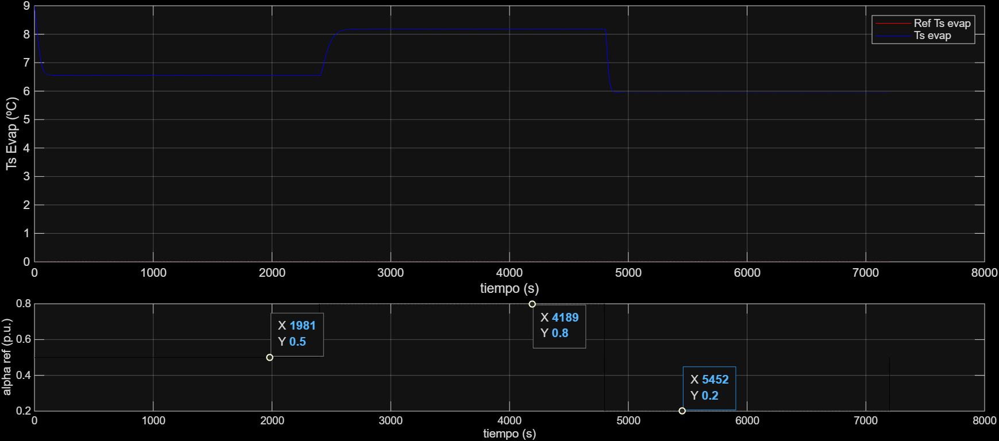
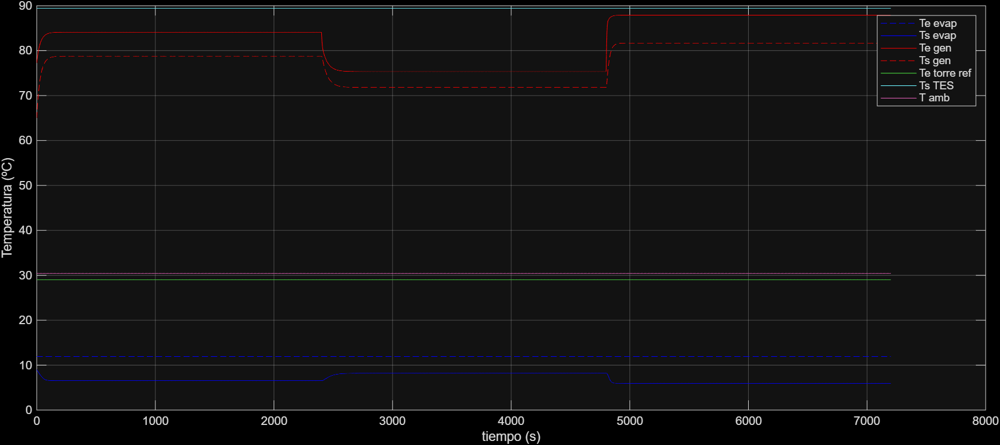
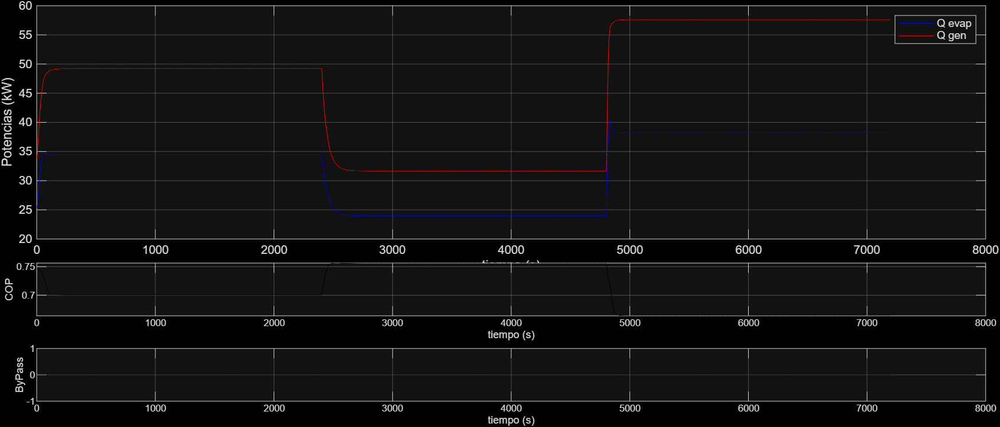
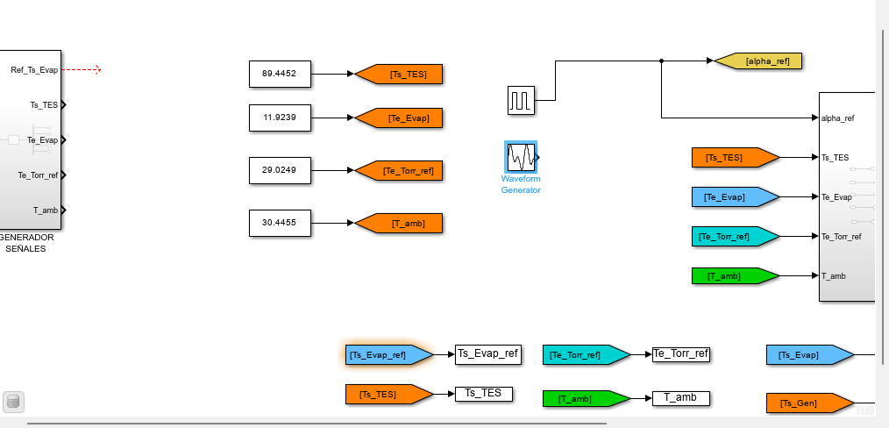
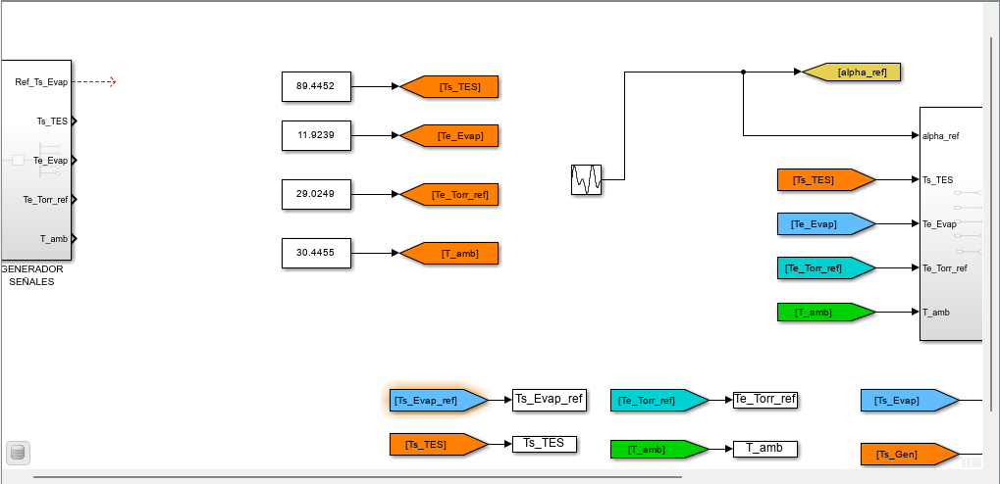
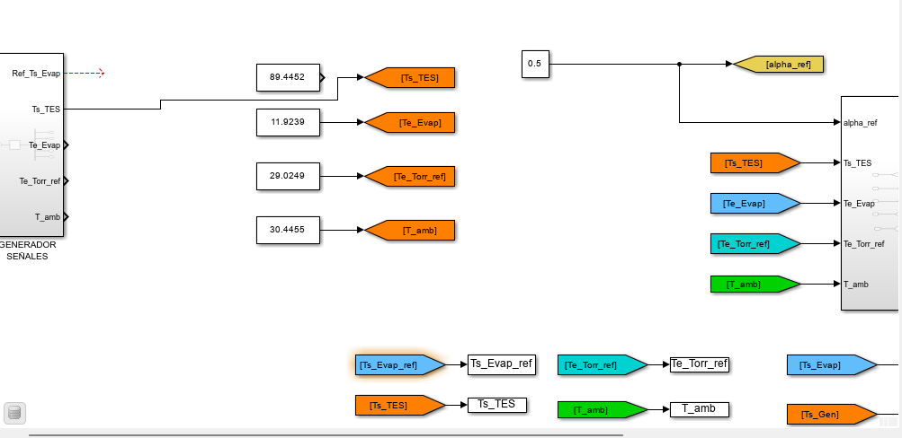
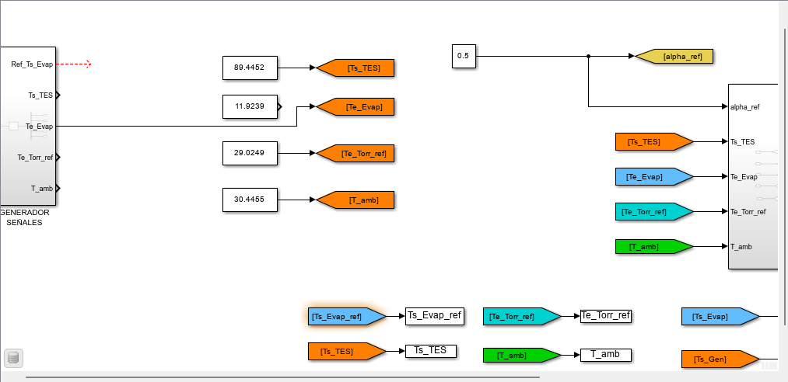
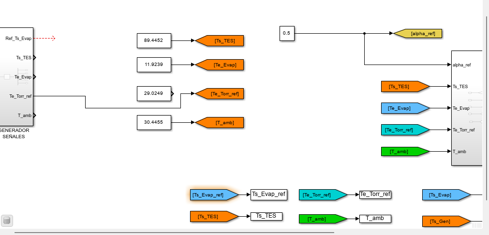

Análisis de Resultados: Semana 3
Gracias al programa valores_promedio.m, logramos obtener estos valores promedio de las siguientes variables para el punto de operación:
Valores Promedio
| Variable | Descripción | Valor Promedio |
|---|---|---|
| Ts_TES | Temperatura salida TES | 89.4452 °C |
| Te_Evap | Temperatura entrada Evaporador | 11.9239 °C |
| Te_Torr_ref | Temperatura entrada Torre Ref. | 29.0249 °C |
| T_amb | Temperatura Ambiente | 30.4455 °C |
Gráficas de Comportamiento Dinámico
Se hicieron steps de \(\alpha_{ref}\) que varían de 0.5 a 0.8 y 0.2, obteniendo los siguientes resultados:

Figura 1: Control alpha_ref vs ts_evap
Figura 2: Evolución de Temperaturas
Figura 3: Desempeño de Bypass, COP y PotenciasIdentificación de la Planta: Estrategia SystemIdentification
Para los modelos de planta, se utilizó la estructura de transferencia: $\(G(s) = \frac{K_p}{1+T_{p1}s} e^{-T_d s}\)$
1. Modelo a señal alpha_ref escalón

Para el modelo con entrada escalón en \(\alpha_{ref}\) (0.5 a 0.8 y 0.2), manteniendo temperaturas constantes:
| Parámetro | Valor Estimado | Incertidumbre |
|---|---|---|
| Kp | 4.2729 | +/- 0.0303 |
| Tp1 | 41.932 | +/- 0.3656 |
| Td | 7.503 | +/- 0.0009 |
- Fit to estimation data: 99.9%
- Disturbance Model (ARMA): \(C(s) = s + 2\), \(D(s) = s + 0.0001\)
2. Modelo alpha_ref senoidal

Aplicando \(\alpha_{ref}\) como una senoidal \(\sin(0.3, 0.01, 0) + 0.5\):
| Parámetro | Valor Estimado |
|---|---|
| Kp | 13.564 |
| Tp1 | 692.15 |
| Td | 0 |
- Fit to estimation data: 99.49%
3. Modelo de la planta de Ts_TES vs salida Ts_Evap

| Parámetro | Valor Estimado | Incertidumbre |
|---|---|---|
| Kp | -0.025154 | +/- 0.00046 |
| Tp1 | 31.428 | +/- 0.8226 |
| Td | 29.479 | +/- 0.0056 |
| * Fit to estimation data: 99.59% | ||
| --- |
4. Modelo de la planta de Te_Evap vs salida Ts_Evap

| Parámetro | Valor Estimado |
|---|---|
| Kp | 0.55115 |
| Tp1 | 16.718 |
| Td | 0 |
| * Fit to estimation data: 99.85% |
5. Modelo de la planta de Te_Torr_ref vs salida Ts_Evap

| Parámetro | Valor Estimado | Incertidumbre |
|---|---|---|
| Kp | 0.10831 | +/- 0.0033 |
| Tp1 | 60.901 | +/- 1.0472 |
| Td | 1.502 | +/- 0.0148 |
| * Fit to estimation data: 99.7% | ||
| --- |
6. Modelo de la planta de T_amb vs salida Ts_Evap

| Parámetro | Valor Estimado | Incertidumbre |
|---|---|---|
| Kp | -0.032773 | +/- 0.00077 |
| Tp1 | 8.7807 | +/- 0.2984 |
| Td | 29.504 | +/- 0.0033 |
Nota: Algo interesante es que no afecta mucho la temperatura ambiente a \(Ts_{Evap}\). * Fit to estimation data: 99.1%
Comparativa de Modelos: Teórico vs. Identificación Experimental
Esta tabla contrasta los parámetros del modelo de transferencia
obtenidos mediante el cálculo analítico y las dos estrategias de identificación con superposición.
| Parámetro | 📐 Estimación Teórica | 🔹 Identificación: Escalón | 🔸 Identificación: Oscilación |
|---|---|---|---|
| Ganancia (\(K_p\)) | -0.0361 | 4.2729 | 13.564 |
| Constante de Tiempo (\(T_{p1}\)) | 2.62 s | 41.932 s | 692.15 s |
| Retardo (\(T_d\)) | 2.84 s | 7.503 s | 0 s |